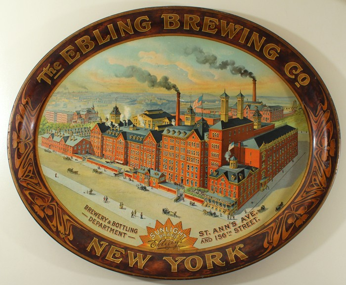
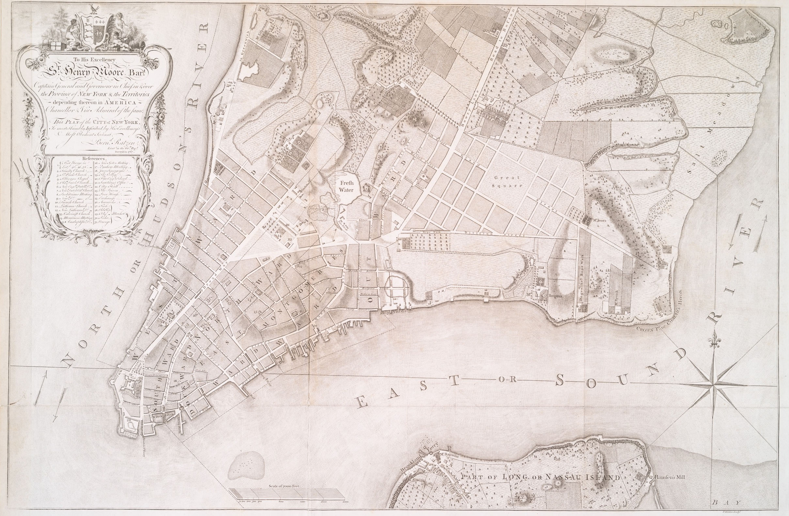
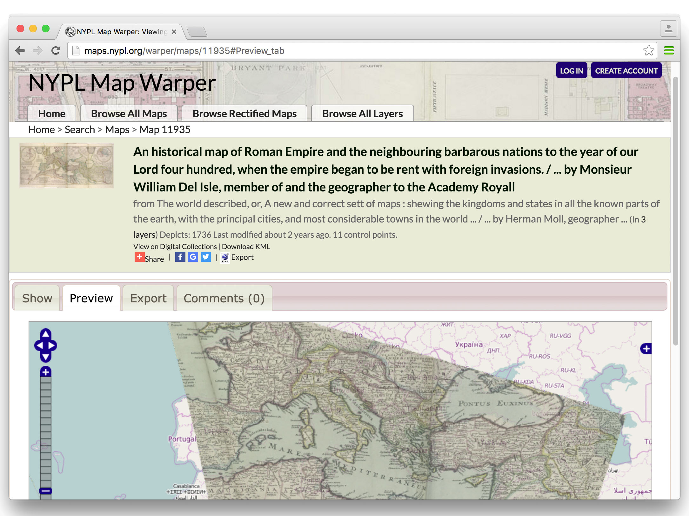
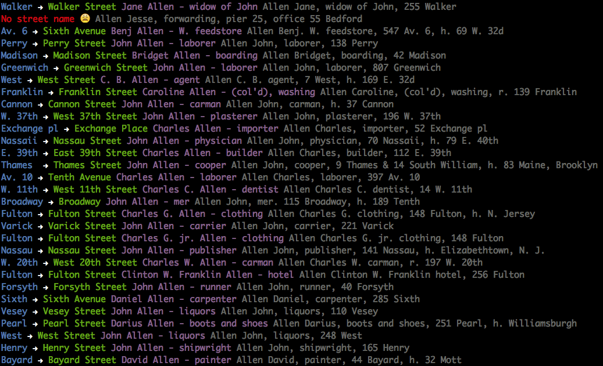
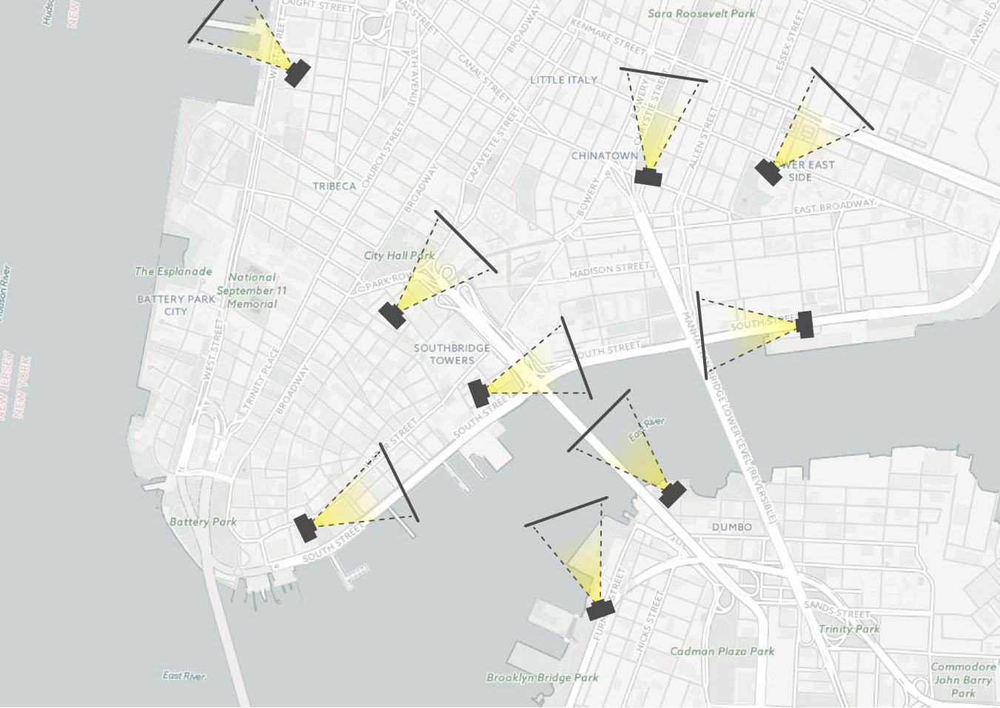
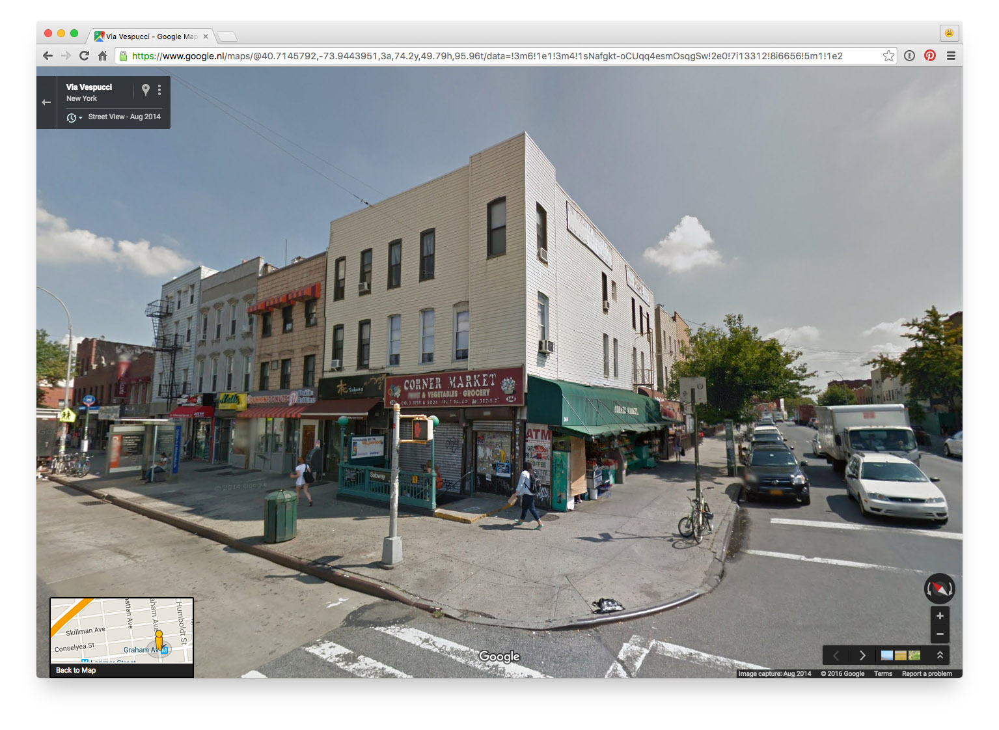

How to build a Space/Time Directory?

Main goal: make the Library's collections and NYC's history more accessible
Example 1: Brooklyn's farms
Example 2: beer

Example 3: cars
First step: the Libary's collection!

Second step: digitization!
Third step: extract data!

Fourth step: combining it all!
NYC Space/Time Directory = NYPL data + external datasets + databases +
APIs + search + geo + RDF + open source + digitization + crowdsourcing + community
Goals: open data, plain JSON files, for everyone to download
Goals: APIs, open source, search tools, user interfaces
Goals: tools that allow people to tell new stories about NYC's history

Fifth step: more crowdsourcing!


Sixth step: make things!
Seventh step: open data + community!
Thanks!